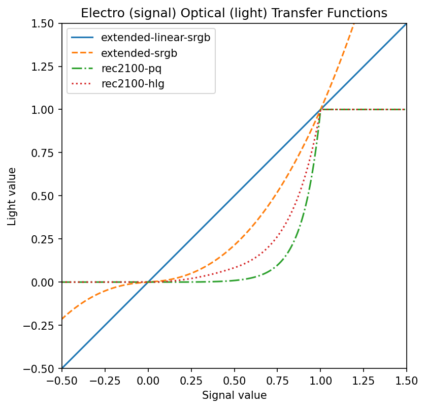

Published on
So, PNG Third Edition adds Coding Independent Code Points (CICP) for color space identification. What is CICP, why should you care, should you be using it and if so, how?
Color spaces
(Hey, I already know what a color space is, skip forward to CICP)
Let us first define what we mean by a color. It is an objective (measured) value, describing the human visual perception of some object that is emitting light (or, for physical objects, is illuminated by some light and reflecting some of that light to our eye).
This measurement consists of three numbers: X, Y and Z. Two objects that have identical X, Y and Z values will look exactly the same color to a normal human observer [1][2].
That hot pink square, for example, has X = 0.5453, Y = 0.3466 and Z = 0.4700
Because working with three-dimensional data is hard, it is common to convert XYZ values into chromaticity values (x,y) where:
x = X / (X + Y + Z)
y = Y / (X + Y + Z)
Two objects with the same chromaticity values will look the same color, but one may be brighter or darker than the other.
To reproduce a given color on a particular screen, we need to know the chromaticities of the red, green and blue primaries and also the exact color of the white that results when those three are mixed together in equal proportions.
Chromaticity diagram showing various RGB color spaces and two white points [3]
We also need to know the relationship between the numbers we send to a screen and the amount of light generated. This is typically not a linear relationship. For example, if a monitor takes values between 0 and 255, and we send a number in the middle (127), we would typically only get 21% of the full amount of light, not 50%. This is called the transfer function [4].
Four different transfer functions for various color spaces
Taken together, the primary chromaticities and the white point define the gamut or range of colors that a given screen can produce [5].
If we also know the transfer function, then for any color that is in gamut, we can calculate the red, green and blue values needed to display that color. In other words, we have a defined color space.
So for example that same hot pink would need red = 0.9297 green = 0.4489 blue = 0.6964 on a Display P3 screen. On a screen with a different color space, the same color would need different numbers.
Introducing CICP
The CICP specification allows labelling of what color space is used for a given image. It doesn’t say how to handle that color space. [6] Because it is just saying which of a small number of industry-standard color spaces is being used, the implementation is expected to handle them all.
Video what?
CICP wasn’t invented for PNG. It builds on an International Telecommunication Union (ITU) specification for broadcast and television whose full title is, somewhat confusingly, “Coding-independent code points for video signal type identification”.
This heritage explains some of the choices for what was included (many old, historical, or obsolete video standards), and what was left out (common color spaces for still images, like ProPhoto RGB).
But CICP isn’t just for video anymore; it has been adopted by still-image and animation formats like AVI and JPEG-XL. And now, PNG as well.
Four (well, two) numbers
To save space and to encourage automated processing, CICP encodes the color space using just four numbers, each of which can be encoded in one byte. The actual meaning of each one can be found in the ITU H.273 specification.
Of those, two are vitaly important: the Color Primaries, which tell you the chromaticity of the white, red, green and blue, thus defining the color gamut; and the Transfer Characteristics or Electro-Optical Transfer Function (EOTF), which allows interconverting between the pixel values in the image and the light intensities emitted by the display.
In theory these are independent, but not all combinations make sense. Also, sometimes multiple color standards use the same primaries, or the same transfer function.
For example, a value of 1 for primaries is used by a bunch of standards including ITU-R BT.709-6 (which is used for High-Definition TV). More relevant for the web, it is also used by IEC 61966-2-1 (which is sRGB, the basic default color space for the web ever since CSS 1).

To distinguish between these various options, we also need to give the transfer function. For sRGB, we want transfer function 13
while for HDTV, we need transfer function 1
Turning now to wide gamut images, a primaries value of 11 is used by SMPTE RP 431-2, otherwise known as DCI P3 and used for digital cinema reference projectors. While a value of 12 is used by SMPTE EG 432-1, which covers Color Processing for D-Cinema. Notice that the red, green and blue chromaticities are identical. The whites differ, DCI-P3 uses a weird, somewhat greenish white [7] while the other one, which is used for general wide-gamut digital video workflow, uses the widespread D65 daylight white.
If we combine primaries 12 and transfer 13 (yes, the exact same one as sRGB uses) we end up with Display P3 which is the most common wide-gamut color space for modern web content.
The other two numbers
I did say earlier that two of the four numbers in CICP were vitally important and you probably wondered what was up with the other two.
The fourth number specifies whether Full Range or Narrow Range is used.
Most digital image processing uses the full range of code values: for 8-bit data, black is at 0 and white at 255, while for 16-bit data, black is again at 0 and white at 65535.
In 10-bit narrow range, black starts at 64 (not 0) and white is at 940 (not 1023); in 16-bit narrow-range, black starts at 4096 (not 0) and white is at 60160 (not 65535). This is called the “legal range”. The extra headroom and footroom outside that range (called the “extended range”) is used to capture momentary excursions outside the legal range, such as overshoots (ringing) from image filtering [8]. This was also used to slightly extend the dynamic range in some systems (super whites).
On SDI video systems, certain values are reserved and used for things like synchronization packets, line counts and cyclic redundancy checksums. For example, a 10-bit SDI system will reserve values 0 to 3 and 1020 to 1023 for synchronization packets and ancillary data [9].
It is worth noting that these types of video systems rarely handle RGB data directly; instead they use luminance and chrominance (Y’CbCr) data. If that content gets converted to RGB to make a still image or short animated sequence, there is the option to convert to Full Range RGB at the same time.
All of which is to say that narrow range RGB data is not so common in practice (it is also poorly supported in browsers at the current time). Narrow range RGB PNG images do exist, but they are generated and processed in video workflows [10] and don’t often show up in the wild on the web.
Which brings us to the remaining (third) number, Matrix coefficients.
This gives the matrix to convert from Y’CbCr to RGB. Since PNG only handles RGB data, the value of this in PNG images is always zero, meaning “data is already RGB, nothing to do”.
Why, then, did we bother storing it at all?
Two reasons – compatibility and extensibility.
To interoperate with other systems, which do handle formats other than RGB, it is better to explicitly store the extra number even if the value is fixed. It is only one byte, after all.
Also to allow future extension (maybe a newer version of PNG will store other formats than RGB) it is also better to store it explicitly in this version.
High Dynamic Range
The color spaces used as examples so far in this post have all been
Standard Dynamic Range (SDR),
meaning that the media white (as in CSS white of RGB #FFFFFF)
is also the brightest color that can be displayed.
Media white can be comfortably viewed, over the whole screen.
This limits the dynamic range to around 8 stops [11] which is not enough for high quality images and video.
In High Dynamic Range (HDR),
the same media white can of course be produced,
but also significantly brighter colors
(and significantly darker colors than the dark gray
which often represents black on SDR systems).
For example, an HDR reference monitor
might have a dynamic range of 14 stops [12].
By far the most commonly used HDR primaries (used by HDR streaming services like, for example, Netflix, Prime, and Disney+ [13]) are defined in ITU-R BT.2100 [14]. These give a significantly wider gamut than Display P3, although content does not necessarily take advantage of the full gamut [15].
This is indicated in CICP with a primaries value of 9:
To define a color space we also need the transfer function, and in fact threre are three in common use.
The first is ITU-R BT.2020 [16], an SDR space used for UltraHD (4k) television.
This uses transfer values 14 or 15 (depending on whether the content uses 10 bits or 12 bits per component) which is a bit sneaky since the actual equations are the same; CICP does not have a separate way to indicate significant bits although PNG does [17]:
The second is Perceptual Quantizer (PQ), an HDR space used for color graded content such as movies.
In CICP, PQ is indicated with transfer value 16 (and note this covers bit depths from 10 to 16):
PQ was first defined by SMPTE ST 2084 and is now a part of ITU-R BT.2100.
The third is Hybrid Log Gamma (HLG), an HDR space used for live broadcast such as sports, and also for iPhone video clips [18].
In CICP, HLG is indicated with transfer value 18:

HLG was first defined in ARIB STD-B67 and is now a part of ITU-R BT.2100.
Lastly, HDR content that doesn’t need (and isn’t required to use) BT.2100 can specify P3 D65 with the PQ transfer function: primaries 12, transfer 16. This is used in, for example, Dolby Vision HDR.
CICP compared to ICC profiles
In summary, since ICC profiles are currently the main way to ensure accurate color (at least, for still, SDR images) here is a quick comparison.
| CICP | ICC |
|---|---|
| RGB, YCC, XYZ [19] | RGB, CMY, CMYK, Lab |
| list of known spaces[20] | any space [21] |
| small | larger to very large (CMYK) [22] |
| what it is | what to do with it |
Since PNG is limited to RGB images, the fact that CICP doesn’t support things like CMYK or Lab is not an issue. However, it does mean that common but not representable RGB spaces like Adobe 1998 RGB or ProPhoto RGB cannot use CICP and have to be identified with ICC profiles instead.
cICP in PNG
Wait why the little c
Chunks in PNG use four ASCII letters.
If the first letter is uppercase (for example IHDR Image header)
then that chunk is critical;
the image cannot be understood without it.
There are only four critical chunks.
If the first letter is lowercase (for example cICP)
then that chunk is ancillary;
the image can be displayed without understanding this chunk.
Most chunks are ancillary.
For some ancillary chunks (like tIME, the image last-modification time)
ignoring the chunk has no impact on image display at all;
for others, like cICP, ignoring it means the image is displayed with the wrong colors.
Adds just 16 bytes
Compared to the iCCP Embedded ICC profile chunk,
which adds 23 bytes plus the size of the compressed profile,
cICP adds a total of 16 bytes to the image.
Checking on some ICC profiles in PNG tests I found the smallest compressed profile was 312 bytes, so it adds 335 bytes in total; the largest was 8,825 bytes, so it adds 8,848 in total.
Naturally this makes more of a difference for tiny to small PNG images.
Browser support
The cICP section of the
Implementation Report
(a dated snapshot, needed for a W3C specification to become a standard)
lists support in various tools,
including browsers.
CICP in PNG is supported in Chrome (and thus, Edge); Firefox, Safari, and two new, up-and coming browsers [23], Servo and Ladybird
To demonstrate, here is a sample PNG image [24]
which uses cICP to label the color space,
which in this case is BT.2020.
Now, if your browser did not support cICP in PNG images,
that image would look the same as this, incorrect, washed-out one:
Sadly, if your browser is displaying on an old, sRGB-only screen [25] the images will also look similar, but that is the best your screen can do. Luckily, most modern hardware can display most of the Display P3 gamut.
What is in my PNG
By now you may well be wondering,
are the PNG images I am exporting
from my favorite program already using cICP?
Or something else?
Or nothing?
I recently extended an ancient command-line tool,
pngcheck,
to support all the PNG Third Edition chunks
including cICP.
Without any arguments, it just tells you whether the PNG iage(s) are valid or not (plus some summary information)
$ pngcheck lin-srgb-hlg-pq.png
OK: lin-srgb-hlg-pq.png (839x803, 32-bit RGB+alpha, non-interlaced, static, 97.6%).With the -v option (v for verbose)
it also lists each of the chunks in the file
(this can get quite long, for larger images):
$ pngcheck -v lin-srgb-hlg-pq.png
File: lin-srgb-hlg-pq.png (64792 bytes)
chunk IHDR at offset 0x0000c, length 13
839 x 803 image, 32-bit RGB+alpha, non-interlaced
chunk sBIT at offset 0x00025, length 4
red = 8 = 0x08, green = 8 = 0x08, blue = 8 = 0x08, alpha = 8 = 0x08
chunk pHYs at offset 0x00035, length 9: 5905x5905 pixels/meter (150 dpi)
chunk tEXt at offset 0x0004a, length 56, keyword: Software
chunk IDAT at offset 0x0008e, length 8192
zlib: deflated, 32K window, default compression
chunk IDAT at offset 0x0209a, length 8192
chunk IDAT at offset 0x040a6, length 8192
chunk IDAT at offset 0x060b2, length 8192
chunk IDAT at offset 0x080be, length 8192
chunk IDAT at offset 0x0a0ca, length 8192
chunk IDAT at offset 0x0c0d6, length 8192
chunk IDAT at offset 0x0e0e2, length 7202
chunk IEND at offset 0x0fd10, length 0
No errors detected in lin-srgb-hlg-pq.png (13 chunks, 97.6% compression).So, that one doesn’t have any color information at all. Browsers will treat is as sRGB.
Here is an example which includes an ICC profile (the iCCP chunk):
$ pngcheck -v macbeth-v2-ProPhoto.png
File: macbeth-v2-ProPhoto.png (2530 bytes)
chunk IHDR at offset 0x0000c, length 13
670 x 450 image, 24-bit RGB, non-interlaced
chunk iCCP at offset 0x00025, length 666
profile name = LittleCMS ICC profile, compression method = 0 (deflate)
compressed profile = 643 bytes
chunk IDAT at offset 0x002cb, length 1795
zlib: deflated, 32K window, maximum compression
chunk IEND at offset 0x009da, length 0
No errors detected in macbeth-v2-ProPhoto.png (4 chunks, 99.7% compression).And now, one with the cICP chunk.
The cryptic H.273 codes are expanded to human-readable color space information;
this one uses BT.2100 primaries and the PQ transfer curve:
$ pngcheck -v test_pattern-PQ-cICP-cLLI.png
File: test_pattern-PQ-cICP-cLLI.png (9796 bytes)
chunk IHDR at offset 0x0000c, length 13
1024 x 1024 image, 48-bit RGB, non-interlaced
chunk cICP at offset 0x00025, length 4
Rec. ITU-R BT.2100-2 perceptual quantization (PQ) system
White x = 0.3127 y = 0.329, Red x = 0.708 y = 0.292
Green x = 0.17 y = 0.797, Blue x = 0.131 y = 0.046
Full range
chunk cLLI at offset 0x00035, length 8
Maximum content light level = 10000 cd/m^2
Maximum frame average light level unknown
chunk IDAT at offset 0x00049, length 8192
zlib: deflated, 32K window, default compression
chunk IDAT at offset 0x02055, length 1499
chunk IEND at offset 0x0263c, length 0
No errors detected in test_pattern-PQ-cICP-cLLI.png (6 chunks, 99.9% compression).The png_cicp_editor utility
Some programs will export a PNG, but expect you to pass along the color space info yourself to whatever program is next in your pipeline. Clearly, that won’t work on the web; browsers will assume the untagged image is in sRGB.
So there is a need to take a given PNG,
where you already know the color space,
and add cICP without otherwise altering the image.
Chris Blume,
who is the chair of the W3C PNG Working Group,
wrote a nice little command-line utility
to do that one specific task.
It is called png_cicp_editor.
Here it is being used to label a PNG image as display P3:
png_cicp_editor add --preset display-p3 test.pngNotice that your image is modified in-place. Notice too that the actual image data is not changed in any way (it does not do color space conversion), this utility simply inserts the missing color space labelling that should have been there anyway.
Here is another example, marking an HDR image as being in the BT.2100 color space with PQ transfer function:
png_cicp_editor add --preset bt.2100-pq test2.pngThe available presets [26] cover the most common color spaces which will be encountered in practice.
But to avoid clutter, they don’t cover all possible options. Suppose you have a PNG image converted from some old video format, which CICP does in fact support. Then you can provide your four numbers directly (you will need to look them up in the ITU H.273 specification, which is freely available).
For example, to label an RGB image decoded from an old SECAM video:
png_cicp_editor add --color_primaries 5 --transfer_function 4 --matrix_coefficients 0 --video_full_range_flag 1 secam-test.pngGeeknotes
Normal in the sense that they do not have what is commonly, but inaccurately, called color blindness. Better terms are atypical color vision or color vision deficiency (CVD) because those people are usually not unable to tell the difference between, say, a red and a green; rather their ability to tell them apart is reduced. Because the genes controlling this are on the X chromosome, people who have only one X chromosome (XY) are much more likely to have CVD (8%). People with two (XX) are much less likely to have both of them affected; around 0.5%. ↩︎
For objects that emit light, it doesn’t matter what their exact emission spectrum is (how much light they produce at each wavelength). For objects that reflect light, it also doesn’t matter, if the light source that is illuminating them is constant. Otherwise, they may or may not match. This is called metamerism [27]. ↩︎
WikiMedia Commons image by Andrew Somers, used under a CC-BY-SA 4.0 license ↩︎
In full, the Electro-Optical Transfer Function (EOTF). Just to be extra spicy, some standards instead define the Opto-Electrical Transfer Function and let you do the math. ↩︎
Want a deep dive on color gamuts? You are in luck, I have a whole blog post about that. ↩︎
ICC profiles, on the other hand, define how to convert image data to and from XYZ, but don’t tell you what the data actually is. ↩︎
This is actually the color produced by the xenon lamp inside the reference projector. ↩︎
For further details see EBU-R-103 (2020) Video Signal Tolerance in Digital Television Systems. ↩︎
For further details see Society of Motion Picture and Television Engineers (2013) SMPTE-RP-177 Full-Range Image Mapping. ↩︎
For example, the video post-production software suite DaVinci Resolve 20 fully supports both Full-Range and Narrow-Range PNG images on import and export. ↩︎
Dynamic range is the difference in luminance between the lightest and the darkest colors. Dynamic range is measured in photographic stops. One stop is a doubling of luminance.
If you want to play with this, the equation is very simple:
function DynamicRange (high, low) { return Math.log2(high) - Math.log2(low); }For example, in sRGB, under standard viewing conditions, white is defined to have a luminance of 80 cd/m² while black is defined to have a luminance of 0.2 cd/m². Thus, the dynamic range is 8.6 stops. ↩︎
For example, on an HDR reference mastering display, the small-area peak white might have a luminance of 1000 cd/m² while the deepest black has a luminance of 0.05 cd/m². Thus, the dynamic range is 14.3 stops. ↩︎
All trademarks mentioned are the property of their respective owners. ↩︎
ITU-R BT.2100-2 (2018) Image parameter values for high dynamic range television for use in production and international programme exchange. ↩︎
Common practice is to create and color grade HDR content on an HDR display which uses P3 primaries and D65 white point, but then (for example for hardware or software compatibility) to convert the image data to BT.2100 [28]. ↩︎
ITU-R BT.2020-2 (2015) Parameter values for ultra-high definition television systems for production and international programme exchange](http://www.itu.int/rec/R-REC-BT.2020/en). ↩︎
PNG uses the
sBITSignificant bits chunk for this purpose. ↩︎See the Apple support article Edit HDR video recorded on an iPhone or iPad. The color space is (incorrectly) called “Wide Gamut HDR - Rec. 2020 HLG” in that article. ↩︎
CIE XYZ is available, but with a stupid equi-energy white point: x=0.3333 y=0.3333. CICP can’t be used to label useful spaces like xyz-d65 or xyz-d50. ↩︎
Sadly, some of those code values are taken up by obsolete or historical video systems that nobody uses anymore. And most values are reserved for future standardization. ↩︎
ICC profiles can describe how to process any color space that has been measured. In the case of RGB profiles, that means measuring the color and white primaries and the transfer curve; for CMY and CMYK profiles, it entails measuring several hundred color patches to build an inverse lookup table. ↩︎
The
cICPchunk (including chunk name, length and checksum) adds 16 bytes, much smaller than even a minimal ICC profile.iCCPholds compressed profiles but even so the size can be significant for smaller files. ↩︎Browser engine diversity is a good thing for the web in general. Not only does it give users more choice, but it makes the web more robust and more resistant to being controlled by, and aimed towards, a single browser engine. Chris Coyier explains it well in a CSS Tricks article as does Brian Kardell discussing Ecosystem Health. ↩︎
The original (and higher resolution) image is entitled Happy 25th anniversary, Krita! by David Revoy and is used here with explicit permission (including for the version with the wrong colors!) under a CC-BY-SA 4.0 International license.
Both versions used here are modified from the original:
- the image was resampled to a lower resolutions
- the image was converted to BT.2020 color space
- the image was exported as PNG, with no embedded ICC profile and without converting to sRGB
For the correct image, a
cICPchunk was added as described in this blog postFor the incorrect image, it was not. ↩︎
Test pages like this one will let you see whether you are using a wide gamut monitor. ↩︎
Here are the names of all the presets (as of March 2025) together with the specifications that define each color space and some places where they are commonly used:
Preset Specification Used for bt.601-pal Rec. ITU-R BT.601 625-line 50 Hz (PAL) old video framegrabs bt.601-ntsc Rec. ITU-R BT.601 525-line 60 Hz (NTSC) old video framegrabs bt.709 Rec. ITU-R BT.709-6 HDTV (1080p) srgb-linear linear-light sRGB video games, GPU srgb IEC 61966-2-1 sRGB web default bt.2020-10-bit Rec. ITU-R BT.2020-2 (10-bit system) 4k streaming bt.2020-12-bit Rec. ITU-R BT.2020-2 (12-bit system) 4k streaming bt.2100-pq Rec. ITU-R BT.2100-2 perceptual quantization (PQ) system HDR streaming bt.2100-hlg Rec. ITU-R BT.2100-2 hybrid log-gamma (HLG) system iPhone video, images dci-p3 SMPTE RP 431-2 with SMPTE ST 428-1 D-Cinema Distribution Master (DCI-P3) digital cinema display-p3 Display P3 modern WCG web p3-d65-pq P3-D65 PQ Dolby Vision HDR For Dolby Vision mastering, see Dolby Vision Content Creation Best Practices Guide ↩︎
No, I am not going to get into corresponding colors and chromatic adaptation. At least, not in this particular blog article. ↩︎
It would be pretty useful, for good color gamut mapping, to know the actual range of colors used for a given image, animation or video.
PNG Third Edition has a special chunk,
mDCVMastering Display Color Volume for that very purpose. ↩︎
{kind=link}